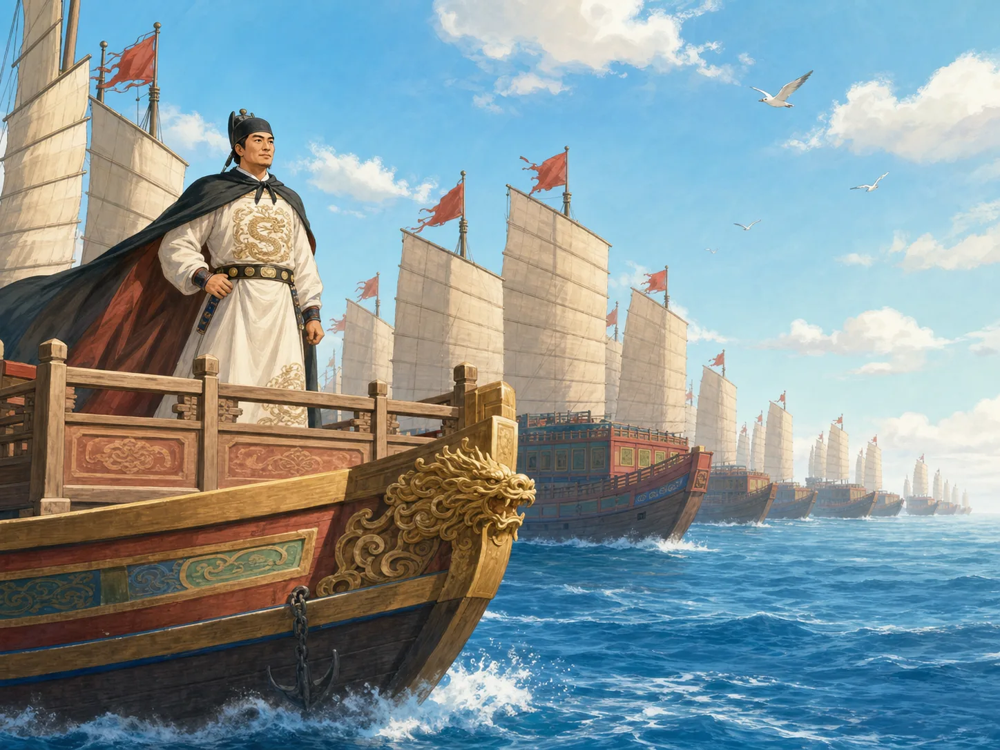
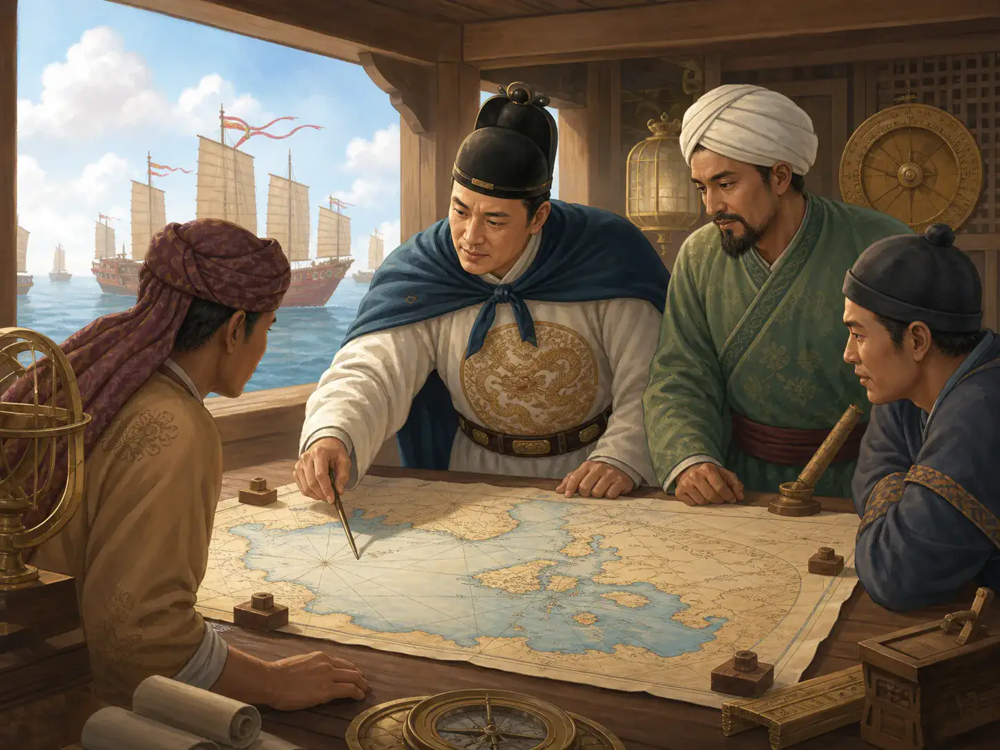
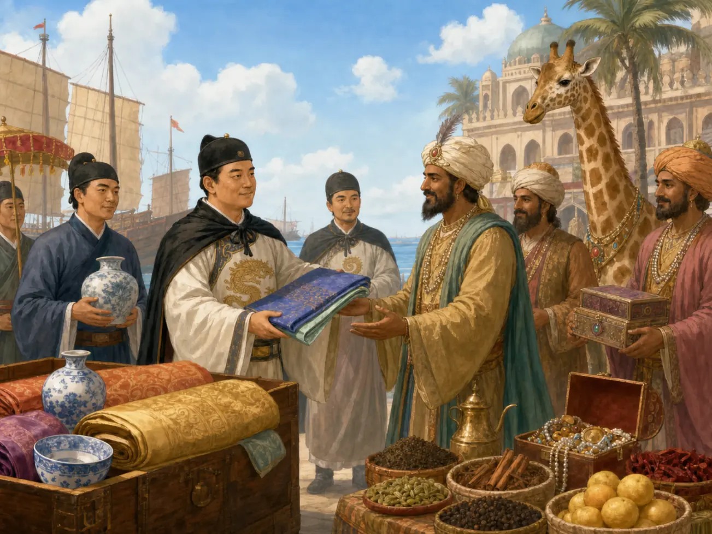

郑和：船队为什么出发，又为什么停下？
Zheng He: Why Did the Fleets Sail - and Why Did They Stop?
阅读难度 · 困难Reading level · Hard
Page 1
海面上有多少船？最大的船究竟多大？
How Many Ships Sailed - and How Big Were the Largest?

Modern imagined scene, not an engineering reconstruction of the treasure ships. Sources show a large fleet with different kinds of vessels, but scholars still debate the enormous dimensions recorded in the later History of Ming.
一四〇五年，明朝第一支下西洋船队从长江口附近出发。记录中常见的第一航次人数超过两万七千，船队里有运货、运水、运马和执行护卫等不同任务的船；可是“二百多艘”怎样计算、哪些属于远洋主船，不同史料和解释并不完全一致。后面六次航行的船数与人员也会改变，不能拿第一航次的数字贴在每一次远航上。
最大的“宝船”更像一道历史侦探题。清代编成的《明史》记下四十四丈长、十八丈宽的惊人数字，按常见换算会超过一百三十米；有些学者接受大型巨舰的可能，另一些学者从木船结构、早期记录和船厂遗址出发，认为实际船长应小得多。没有完整船体留存，争论还没有结束。我们可以确定船队规模惊人，却不该把一幅巨舰比较图当成已经量过的事实。
In 1405, the first Ming expedition to the “Western Oceans” sailed from near the mouth of the Yangtze River. Records for that first voyage are often read as listing more than 27,000 people. The fleet included different vessels for cargo, water, horses, protection, and other work. Yet sources and scholars do not always count “more than two hundred ships” in the same way, or agree on which vessels crossed the open ocean. The numbers also changed across the next six voyages, so the first voyage's total cannot be pasted onto every expedition.
The largest “treasure ships” present an even harder mystery. The History of Ming, completed during the Qing dynasty, gives the astonishing dimensions of 44 zhang long and 18 zhang wide - more than 430 feet long by a common conversion. Some scholars think extremely large ships were possible. Others compare wooden-ship engineering, earlier records, and shipyard remains and argue for much smaller vessels. No complete hull survives, so the debate is not finished. We can be sure that the fleet was impressive without treating a dramatic size chart as a finished measurement.
Page 2
马和怎样成为郑和
How Ma He Became Zheng He
郑和原名马和，大约一三七一年出生在云南的一个穆斯林家庭。一三八〇年代初，明军攻取云南时，他还是少年，被军队俘虏，遭到宫刑，后来进入燕王朱棣的王府做宦官。我们不知道被俘那一天他说了什么、害怕到什么程度；这些私人场景没有可靠记录。能确定的是，他后来长期为朱棣服务，并在朱棣夺取皇位的战争中得到信任。
朱棣成为永乐皇帝后，马和受赐郑姓，被称为郑和，并担任内廷高级宦官。宦官不是普通“宫廷仆人”：他们受皇帝直接控制，有些人能统军、出使和管理庞大工程。郑和的宫廷身份、军事经验和皇帝信任，都是他能统领远航的重要条件。说他的穆斯林家庭背景自动让他能和所有穆斯林统治者直接交谈，同样超出证据；真正的船队还需要翻译、书手、使者和熟悉各海域的向导共同工作。
Zheng He's original name was Ma He. He was born around 1371 into a Muslim family in Yunnan. When Ming armies conquered Yunnan in the early 1380s, he was still a boy. Soldiers captured him, he was castrated, and he later entered the household of Zhu Di, the Prince of Yan, as a eunuch. We do not know what Ma He said on the day of his capture or exactly how frightened he felt. No trustworthy record preserves that private scene. We do know that he served Zhu Di for many years and earned trust during the war in which the prince seized the throne.
After Zhu Di became the Yongle Emperor, Ma He received the surname Zheng and became known as Zheng He. He rose to be a high-ranking palace eunuch. Eunuchs were not simply “palace servants.” They answered directly to the emperor, and some commanded troops, led embassies, or managed enormous projects. Zheng He's court position, military experience, and the emperor's trust all helped place him in command. His Muslim family background did not magically let him speak with every Muslim ruler. The real fleet needed interpreters, clerks, envoys, and pilots who knew different languages and seas.
Page 3
远航不是一场单纯的“和平友谊旅行”
These Were Not Simple “Friendship Voyages”
永乐皇帝派船队出海，首先是要把明朝的皇帝诏书、历法和礼物送到各地，邀请或要求当地统治者派使者入明朝贡。朝贡不是单纯送礼：海外使者承认一种以明朝皇帝为中心的政治礼仪，明廷回赐物品、确认一些统治者的地位，并让官方贸易在仪式中进行。华丽的丝绸、瓷器和庞大舰队一起展示了财富，也展示了“拒绝可能有后果”的力量。
所以这些航行同时包含外交、皇权秩序、官方贸易、信息收集和军事威慑。它们不像后来欧洲列强那样在沿岸建立大片殖民地，却也不是没有权力差距的友好参观。永乐皇帝刚通过内战取得皇位，海外使者到南京承认他的朝廷，也能加强他在国内外的政治地位。把一切解释成寻找失踪皇帝的秘密任务，或解释成纯粹和平交流，都太单一。
The Yongle Emperor first sent the fleets to carry imperial letters, calendars, and gifts abroad. Local rulers were invited - or pressured - to send envoys and tribute to the Ming court. Tribute was more than gift giving. Overseas envoys took part in ceremonies that placed the Ming emperor at the center of a political order. In return, the court gave valuable goods, recognized some rulers, and allowed official trade to happen through the visits. Fine silk and porcelain displayed wealth. A huge armed fleet also showed that refusing Ming demands could have consequences.
The voyages therefore mixed diplomacy, imperial ceremony, state trade, information gathering, and military pressure. They did not build large overseas colonies like later European empires, but neither were they friendly tours between equal partners. The Yongle Emperor had taken the throne through civil war. When foreign envoys came to Nanjing and recognized his court, that also strengthened his political position at home and abroad. Explaining everything as a secret search for a missing emperor - or as pure peaceful exchange - makes the story too simple.
Page 4
航线不是一次画完的，船也不是一齐到达每个港口
The Route Grew Voyage by Voyage - and Not Every Ship Reached Every Port

Modern planning scene. Its map style and instruments do not reconstruct Zheng He's working space. Surviving route materials organize coasts, compass courses, and travel times rather than looking like this modern map.
七次航行发生在一四〇五至一四三三年。前三次主要沿东南亚、马六甲海峡、斯里兰卡航向印度西南岸的古里；第四次把主航线推到波斯湾的忽鲁谟斯；第五、第六次有分船继续前往阿拉伯半岛和东非港口；第七次重新走向印度洋西部。大船队常在港口分成支队，所以“郑和船队到过”不一定表示郑和本人或每一艘船都到过同一地点。
他们进入的也不是空白海洋。中国、东南亚、南亚、阿拉伯和东非商人早已使用这些港口与航线。船队要根据印度洋季风选择出发和返航季节，用罗盘针路、星辰、海岸地形、水深和航行时间判断位置，还依靠本地与外来的领航者。后来传下来的“郑和航海图”保存了海岸、方向和里程知识，但不能简单说成郑和亲手绘制的一张完整世界地图。
The seven voyages took place from 1405 to 1433. The first three mainly followed Southeast Asia, the Strait of Malacca, Sri Lanka, and the route to Calicut on India's southwest coast. The fourth pushed the main route to Hormuz in the Persian Gulf. On the fifth and sixth, separate groups continued to ports on the Arabian Peninsula and the East African coast. The seventh expedition again traveled into the western Indian Ocean. Fleets often split into smaller groups at major ports. Saying “Zheng He's fleet reached a place” does not always mean that Zheng He himself - or every ship - went there.
These were not empty seas waiting to be discovered. Chinese, Southeast Asian, South Asian, Arab, and East African merchants had used these ports and routes for centuries. The fleet timed outward and return journeys around Indian Ocean monsoon winds. Navigators used compass courses, stars, coastlines, water depth, and travel time, while local and foreign pilots contributed knowledge of particular waters. A later transmitted “Zheng He Navigation Chart” preserves coasts, directions, and route information. It should not be imagined as one complete modern world map personally drawn by Zheng He.
Page 5
长颈鹿为什么到了南京就变成了“麒麟”？
How Did a Giraffe Become a Qilin in Nanjing?

Modern composite scene combining ships, goods, envoys, and a giraffe. It does not show one verified exchange; these objects belonged to different voyages and political relationships.
一四一四年，孟加拉使团把一只长颈鹿送到明朝宫廷；这只动物原先来自东非一带，并通过印度洋贸易网络转手。宫廷里有人把非洲长颈鹿解释成中国古书中的瑞兽“麒麟”。这不只是认错动物，也是一场文化翻译：陌生来客被放进熟悉故事里，还被用来称赞永乐皇帝统治有德。
船队带回的还有香料、药材、宝石、动物和各地使者；明朝则送出丝绸、瓷器和金银等物。但“带回”不等于郑和发现了这些地方、动物或商品。每一个港口本来就有自己的统治者、居民、语言、宗教和贸易历史。真正值得观察的，是不同人怎样翻译名称、判断价值、安排礼仪，有时互相理解，有时又把对方塞进自己的世界观。
In 1414, an embassy from Bengal presented a giraffe to the Ming court. The animal had originally come from East Africa and had traveled through Indian Ocean trading networks. At court, people connected the African giraffe with the qilin, a lucky creature in Chinese classics. This was more than a simple animal mistake. It was cultural translation: people placed a strange visitor inside a familiar story, and court writers used it to praise the Yongle Emperor as a good ruler.
The fleets also brought back spices, medicines, gems, animals, and foreign envoys. The Ming court sent silk, porcelain, gold, silver, and other goods abroad. But “brought back” does not mean Zheng He discovered those lands, animals, or products. Every port already had its own rulers, residents, languages, religions, and trading history. The interesting question is how different people translated names, judged value, and arranged ceremonies - sometimes understanding one another and sometimes squeezing strangers into their own picture of the world.
Page 6
礼物旁边也有刀剑和俘虏
Beside the Gifts Were Weapons and Prisoners
第一航次返程时，船队在苏门答腊的旧港与陈祖义集团发生战斗。明朝记录把陈祖义称为海盗首领；他被俘后押到南京处死。第三航次在斯里兰卡，郑和军队又与当地统治者阿烈苦奈儿发生冲突，攻入其据点，将他和家人带回明朝。永乐皇帝后来释放他们，并介入当地王位安排。
这些事件不能被“偶尔处理一点小麻烦”轻轻带过，也不应被夸张成一路征服印度洋。船队大多数停靠包含诏书、礼物、贸易和使节往返，但数万人的武装远航本身就是强大的政治压力。在三语碑这样的实物上，我们能看到中文、泰米尔文和波斯文并列的奉献文字；同一片海域不久后又发生战争。交流与强制并不总是分开出现，这正是理解帝国航行最难的一点。
On the return from the first voyage, the fleet fought Chen Zuyi's group at Palembang on Sumatra. Ming records call Chen a pirate leader. He was captured, taken to Nanjing, and executed. During the third voyage in Sri Lanka, Zheng He's forces fought the ruler Alakeshvara, attacked his stronghold, and carried him and members of his family back to China. The Yongle Emperor later released them and became involved in choosing a different local ruler.
These events should not be brushed aside as “a few small problems.” They also should not be exaggerated into a conquest of the whole Indian Ocean. Most port visits involved letters, gifts, trade, and moving envoys, but an armed expedition of tens of thousands created political pressure even without a battle. On an object such as the Galle trilingual inscription, Chinese, Tamil, and Persian words record religious offerings side by side. Soon afterward, war occurred in the same region. Exchange and force do not always arrive separately. That is one of the hardest parts of understanding an imperial voyage.
Page 7
船队停止，不是因为一扇门突然关死
The Voyages Did Not End Because One Door Suddenly Slammed Shut
永乐皇帝死于一四二四年后，新皇帝很快暂停远航；宣德皇帝后来又批准第七次航行，说明政策并不是直线变化。此后不再组织同等级的国家船队，原因也不只一个：造船、人员和赏赐需要财政支持；皇帝和文官对收入与权力的控制有冲突；朝廷把更多注意力放在北京、运河运输和北方边防；新的统治者不再需要用同样方式展示永乐朝的秩序。
这不等于“中国人从此不下海”。政府对私人海上活动有时限制很严，走私、私人贸易、渔业、移民和外国商船往来却没有从海面消失。也没有可靠证据支持“某位官员一把火烧光全部航海档案，所以中国忘记海洋”的简单故事。国家项目停了，海上的人和知识仍在用别的方式移动。
郑和本人最后怎样去世也不完全清楚。很多传记采用一四三三年、死于第七航次期间或返程的说法，传统又常把地点放在古里；但正史没有给出确定卒地，研究者也质疑他是否亲到古里。南京有郑和墓或衣冠冢传统，却不能单独证明遗体怎样安葬。证据停在这里，故事也应该停在这里。
After the Yongle Emperor died in 1424, the next emperor quickly suspended the expeditions. The Xuande Emperor later approved the seventh voyage, showing that policy did not move in one straight line. Afterward, the court did not organize another state fleet on the same scale. There was no single reason. Ships, crews, and gifts required financial support. Emperors and officials struggled over control of money and power. The court turned more attention toward Beijing, canal transport, and defense against threats on the northern frontier. New rulers also had less need to display the particular political order built by Yongle.
This did not mean that “Chinese people never sailed again.” The government sometimes placed harsh limits on private overseas activity, but smuggling, private trade, fishing, migration, and foreign shipping did not vanish. Nor is there solid evidence for the simple tale that one official burned every voyage record and made China forget the sea. The giant state project ended, while people and knowledge kept moving by other routes.
Even Zheng He's death is uncertain. Many biographies place it in 1433 during the seventh voyage or its return, and a strong tradition says he died at Calicut. Official histories do not give a certain place, however, and researchers have challenged whether he personally reached Calicut on that voyage. Nanjing preserves a site known as Zheng He's tomb or memorial grave, but that alone cannot prove where his body was buried. This is where the evidence stops, so it is where our story should stop too.
回答开头的问题
Returning to the Question
郑和船队为什么出发？因为永乐皇帝想用外交礼仪、官方贸易、远方信息和可见的武力，把许多港口连接到以明朝为中心的政治秩序中。它为什么停下？因为支撑这种秩序的皇帝、财政安排、官僚关系和军事重点都发生了变化。
郑和没有“发现”印度洋世界，也不是只带和平礼物的童话船长。他指挥船队进入一张早已繁忙的海上网络，改变了其中一些权力关系，也依赖其中无数水手、翻译和领航者的知识。真正壮阔的，不只是一艘可能很大的船，而是那么多目的、人物和文化在同一片海上相遇，有时交换礼物，有时拔出武器，有时又乘着下一季风继续前行。
Why did Zheng He's fleets sail? The Yongle Emperor wanted to use diplomacy, official trade, distant information, and visible military power to connect many ports to a political order centered on the Ming court. Why did they stop? The emperors, financial arrangements, court politics, and military priorities that supported that order all changed.
Zheng He did not “discover” the Indian Ocean world, and he was not a storybook captain carrying only peaceful gifts. He led fleets into an old and busy maritime network. They changed some of its power relationships while depending on the knowledge of countless sailors, interpreters, and pilots already working across the sea. The greatest part of the story is not only a possibly enormous ship. It is the many purposes, people, and cultures meeting on the same water - sometimes exchanging gifts, sometimes drawing weapons, and sometimes waiting for the next monsoon wind.